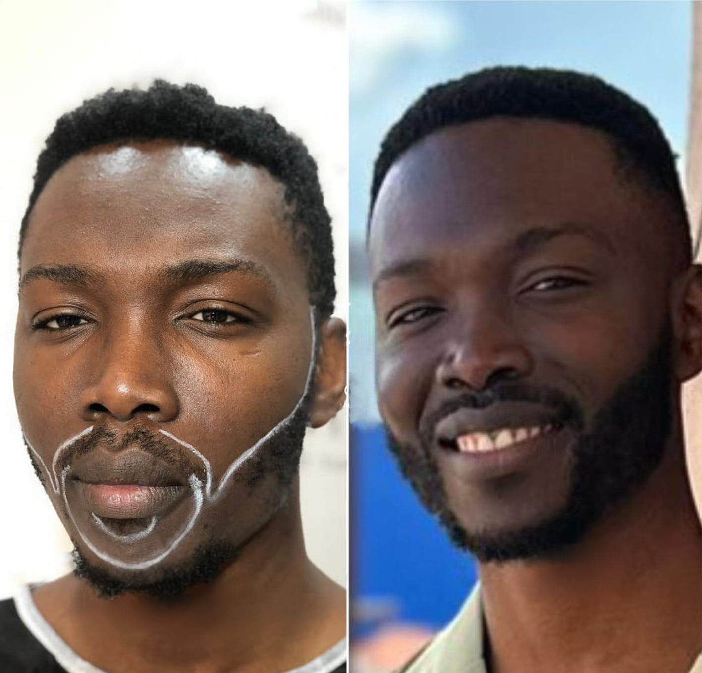

FUE vs DHI: Which is right for you?
Understanding the surgical differences and which technique provides better density...
Read Full GuideThe only clinic in East Africa combining Turkish surgical precision with specialized expertise in Afro-textured hair restoration.
START YOUR JOURNEY TODAY
Why fly to Istanbul when the experts are already here in Parklands?
| Feature | Traveling Abroad | TurkMed Nairobi |
|---|---|---|
| Medical Team | Turkish Doctors | ✔ Same Turkish Specialists |
| Flight & Hotel Costs | KSh 200,000+ Extra | ✔ KSh 0 (Stay Home) |
| Follow-Up Care | Via Email only | ✔ In-Person Monthly Reviews |
| Afro-Hair Experience | Limited | ✔ Specialist Experience |
Scientific guides to help you make the right medical decision.

Understanding the surgical differences and which technique provides better density...
Read Full Guide
Essential steps to protect your grafts and ensure permanent growth in the first two weeks...
View Recovery Plan
How we create natural, dense beard lines using the latest Sapphire FUE technology...
Explore Beard Restoration